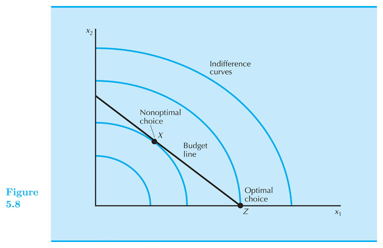
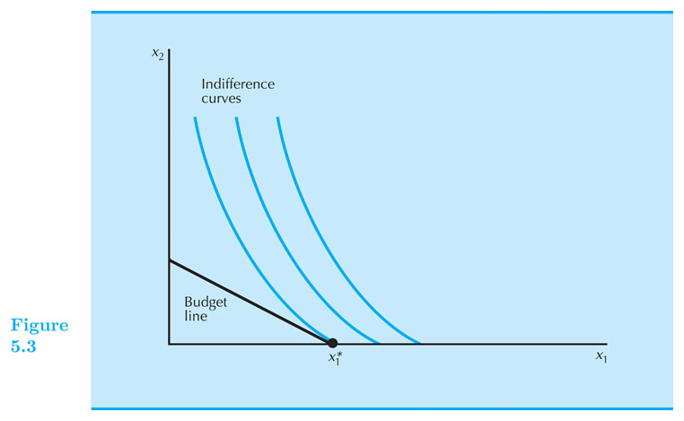

Consumer Choice
Intermediate Microeconomics (Econ 100 A)
Kristian López Vargas
UCSC - Spring 2017
Consumer's Optimal Choice
-
Budget determines what I can buy.
-
Utility function (preferences) determine how I value those affordable alternatives.
-
Which bundle do I buy?
Consumer's Optimal Choice
-
The bundle with the highest utility among the affordable.
-
We call this bundle the Rational Constrained Choice.
Three main cases of Optimal Choice.
-
Tangency Solution: When preferences are well behaved (smooth, convex, ...), then at the optimal bundle: $ MRS = \frac{−p_1}{p_2} $ (for example Cobb-Douglass preferences)
-
Corner solutions or "boundary optimum": if $ MRS > \frac{−p_1}{p_2} $ or $ MRS < \frac{−p_1}{p_2} $ always (for example: perfect substitutes)
-
Kink optimality: if preferences are "kinky" (for example: perfect complements)
Optimal Choice - Tangency Solution

Optimal Choice - Tangency Solution (intuitively)
-
Suppose your preferences look like Cobb-Douglass (smooth, convex).
-
You have a BC and you are considering buying $ (x_1', x_2') $ such that $ x_1'>0, x_2'>0 $ on the BC.
-
Suppose that only thing you know is that your MRS, at the bundle $ (x_1', x_2') $, is higher in magnitude than $ p_1 / p_2$. That is, the associated indifference curve is steeper than the budget constraint.
-
Should you buy the bundle $ (x_1', x_2') $?
Optimal Choice - Tangency Solution (intuitively)
-
No.
-
If MRS is steeper than BC, it means that at that point you value $ x_1 $ more than the market. So...
-
Buy more of that good 1.
-
But how much more?
-
Up to a point in which you and the market value $ x_1 $ the same (relative to $ x_2 $)
-
First optimality condition: $ MRS = \frac{−p_1}{p_2} $
Optimal Choice - Tangency Solution (math method 1)
Steps to find the optimal bundle (aka the demanded bundle) for tangency cases:
-
Identify clearly the utility function.
-
Calculate the $ MRS $, it will be a function of $ x_1, x_2 $ and (possibly) on some parameters of the utility function.
-
Set the tangency condition: $ MRS = - \frac{p_1}{p_2} $ call this Equation 1.
-
Identify the budget constrain and call it Equation 2.
-
Equation 1 and Equation 2 form a 2-equation-2-unknowns system, so you can solve for the two unknowns: $ x_1 $ and $ x_2 $.
Optimal Choice - Tangency Solution (math method 1) - Example
Let's apply these steps to the case of Cobb-Douglas preferences: $ U(x_1, x_2) = x_1^{0.5} x_2^{0.5} $
-
Tangency : $ MRS = - \frac{x_2}{x_1} $. Equate MRS to: $ - \frac{p_1}{p_2} $ (Eq1)
-
Budget constraint : $ p_1 x_1 + p_2 x_2 = m $ (Eq2)
-
[ solve for x1 and x2 in the system of two equations -- details in doc camera ]
-
Optimal bundle: $ x_1^{*} = \frac{1}{2} \frac{m}{p_1} $ and $ x_2^{*} = \frac{1}{2} \frac{m}{p_2} $
Optimal Choice - Tangency Solution - Cobb-Douglas Function
-
Note if you have Cobb-Douglass utility, $ U = x_1^{a} x_2^{b} $, you can always use method 1.
-
Exercise: apply method 1 to this utility function: $ U = x_1^{a} x_2^{b} $
-
An alternative to method 1, is a more general method called the Lagrange Method that we will cover later.
Cobb-Douglas - Typical Graph
Case 2: Optimal bundle in corner solutions
The most typical case of this type of solution is with perfect substitutes preferences.
Steps to finding the optimal bundle when x_1 and x_2 are perfect substitutes:
-
Calculate the $ MRS $, it will be a function of $ x_1, x_2 $ and (possibly) on some parameters of the utility function.
-
Compare its magnitude to the price ratio: $ \frac{p_1}{p_2} $.
-
If $ |MRS| > \frac{p_1}{p_2} $, then all income is spent on good 1: $ x_1 = m / p_1 $ and $ x_2 = 0 $
-
If $ |MRS| < \frac{p_1}{p_2} $, then all income is spent on good 2: $ x_2 = m / p_2 $ and $ x_1 = 0 $
-
If $ |MRS| = \frac{p_1}{p_2} $ any bundle that exhaust income will be optimal.
Finding the optimal bundle (perfect substitutes) - Example!
-
Say, $ u = 2 x_1 + x_2 $
-
$ MRS = - 2 / 1 = - 2 $
-
Compare |MRS| to price ratio: 2 vs. $ \frac{p_1}{p_2} $.
-
If $ \frac{p_1}{p_2} < 2 $, then: $ x_1 = m / p_1 $ and $ x_2 = 0 $
-
If $ \frac{p_1}{p_2} > 2 $, then: $ x_1 = 0 $ and $ x_2 = m / p_2 $
-
If $ \frac{p_1}{p_2} = 2 $, any $ (x_1, x_2) $ such that $ p_1 x_1 + p_2 x_2 = m $ is optimal.
Perfect substitutes
-
See graphs in document camera
-
See graphs on EconGraphs
Case 3: Optimal bundle in "kink" solutions
Most cases of "kink" solutions appear because of "perfect complement" preferences.
Steps to find the optimal bundle under "perfect complement" preferences:
-
Identify clearly the utility function: $ U = \textrm{min} \{ \frac{x_1}{\alpha}, \frac{x_2}{\beta} \} $, for $ \alpha, \beta > 0 $
-
Calculate the optimal consumption path: $ \frac{x_1}{\alpha} = \frac{x_2}{\beta} $. Call this Equation 1.
-
Identify the budget constraint and call it Equation 2.
-
Equation 1 and Equation 2 form a 2-equation-2-unknowns system, so you can solve for the two unknowns: $ x_1 $ and $ x_2 $.
Finding the optimal bundle - Perfect complements - Numerical Example
-
$ U = \textrm{min} \{ \frac{x_1}{2}, x_2 \} $.
-
Optimal consumption path: $ \frac{x_1}{2} = x_2 $. This is Equation 1.
-
Budget Constraint $ m = p_1 x_1 + p_2 x_2 $
-
Optimal bundle: $ x_1^{*} = \frac{m}{p_1 + p_2/2} $ and $ x_2^{*} = \frac{m}{2 p_1 + p_2} $
Perfect Complements
Optimal choice with Lagrange's Method
-
We are back to case 1 or "tangency solution".
-
Conditions:
-
Utility function is differentiable and preferences are convex,
-
$ MRS(0,y) = infinity $ and $ MRS(x,0) = 0 $
-
-
E.g. Cobb-Douglas satisfies these conditions.
-
You can always use the Lagrange's method.
Optimal choice with Lagrange's Method - Steps
-
Set Problem: $ \textrm{maximize} \quad U(x_1, x_2) $ subject to: $ m = p_1 x_1 + p_2 x_2 $
-
Write Lagrange's function
- $ L = U(x_1, x_2) - \lambda ( p_1 x_1 + p_2 x_2 - m) $
-
Differentiate with respect to $ x_1, x_2, \lambda $, equate to zero.
- $ \frac{\partial L}{\partial x_1} = \frac{\partial U}{\partial x_1} - \lambda p_1 = 0 $
- $ \frac{\partial L}{\partial x_2} = \frac{\partial U}{\partial x_2} - \lambda p_2 = 0 $
- $ \frac{\partial L}{\partial \lambda} = - p_1 x_1 - p_2 x_2 + m = 0 $
-
Solve system of three equations.
Optimal choice with Lagrange's Method - Example
-
Consider: $ \quad U(x_1, x_2) = x_1^{0.5} + x_2^{0.5} $
-
Problem: $ \quad \textrm{maximize} \quad x_1^{0.5} + x_2^{0.5} $ subject to: $ m = p_1 x_1 + p_2 x_2 $
-
Lagrange's function: $ \quad L = x_1^{0.5} + x_2^{0.5} - \lambda ( p_1 x_1 + p_2 x_2 - m) $
-
Differentiate with respect to $ x_1, x_2, \lambda $, equate to zero.
- $ \frac{\partial L}{\partial x_1} = 0.5 x_1^{-0.5} - \lambda p_1 = 0 $
- $ \frac{\partial L}{\partial x_2} = 0.5 x_2^{-0.5} - \lambda p_2 = 0 $
- $ \frac{\partial L}{\partial \lambda} = - p_1 x_1 - p_2 x_2 + m = 0 $
-
Solution good 1: $ \quad x_1^* = \frac{ m }{ p_1 + p_2 } \frac{ p_2 }{ p_1 } $
-
Solution good 2: $ \quad x_2^* = \frac{ m }{ p_1 + p_2 } \frac{ p_1 }{ p_2 } $
Practice all these cases with the lagrange's Method.
-
$ U(x_1, x_2) = x_1^{1/2} x_2^{1/2} $
-
$ U(x_1, x_2) = x_1^{1/4} x_2^{3/4} $
-
=> $ U(x_1, x_2) = x_1^{a} x_2^{b} $
-
$ U(x_1, x_2) = x_1^{a} x_2^{1-a} $
-
$ U(x_1, x_2) = (1/4) ln(x_1) + (3/4) ln(x_2) $
-
$ U(x_1, x_2) = a x_1 + b ln(x_2) $
Tangency does not work with non-convex preferences
- Be careful with tangency conditions.

Corner solutions are not only for perfect substitutes
